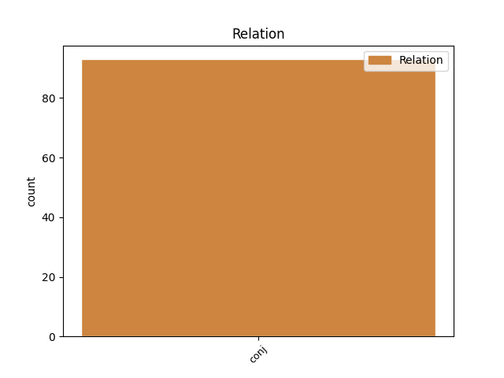
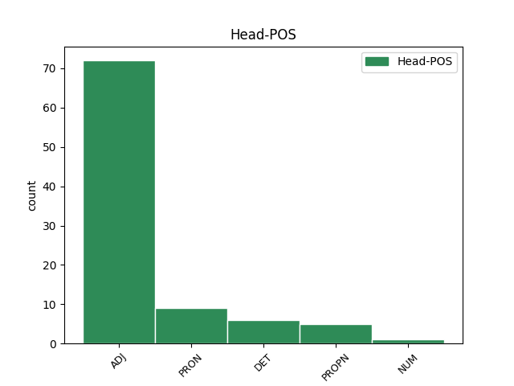
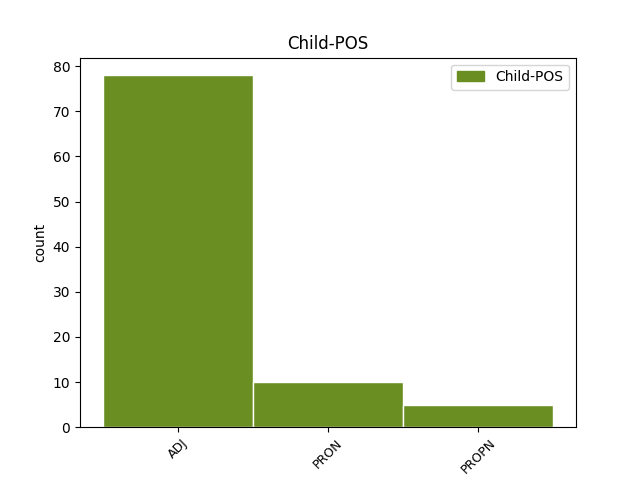

Distribution of features within this leaf



Agreement Rules sorted by frequency.
- When the dependent token is the conjunct(conj) of the head token, and the head token is ADJ and the dependent token is ADJ.
1 Hon _ _ _ _ 0 _ _ _
2 var _ _ _ _ 0 _ _ _
3 slank _ _ _ _ 0 _ _ _
4 , _ _ _ _ 0 _ _ _
5 spänd _ _ _ _ 0 _ _ _
6 , _ _ _ _ 0 _ _ _
7 en _ _ _ _ 0 _ _ _
8 vinthunds _ _ _ _ 0 _ _ _
9 kropp _ _ _ _ 0 _ _ _
10 , _ _ _ _ 0 _ _ _
11 nu _ _ _ _ 0 _ _ _
12 halvt _ _ _ _ 0 _ _ _
13 framåtböjd _ _ _ _ 0 _ _ _
14 , _ _ _ _ 0 _ _ _
15 ryggmusklerna _ _ _ _ 0 _ _ _
16 avtecknade _ _ _ _ 0 _ _ _
17 sig _ _ _ _ 0 _ _ _
18 under _ _ _ _ 0 _ _ _
19 skjortan _ _ _ _ 0 _ _ _
20 , _ _ _ _ 0 _ _ _
21 vit _ _ _ _ 0 _ _ _
22 , _ _ _ _ 0 _ _ _
23 stärkt stärkt ADJ POS-SG-IND Case=Nom|Definite=Ind|Degree=Pos|Gender=Com|Number=Sing 0 _ _ _
24 , _ _ _ _ 0 _ _ _
25 dyr dyr ADJ POS-SG-IND Case=Nom|Definite=Ind|Degree=Pos|Gender=Com|Number=Sing 23 conj _ SpaceAfter=No
26 . _ _ _ _ 0 _ _ _
1 Det _ _ _ _ 0 _ _ _
2 blev _ _ _ _ 0 _ _ _
3 ingenting _ _ _ _ 0 _ _ _
4 kvar _ _ _ _ 0 _ _ _
5 i _ _ _ _ 0 _ _ _
6 lokalen _ _ _ _ 0 _ _ _
7 utom _ _ _ _ 0 _ _ _
8 hon _ _ _ _ 0 _ _ _
9 och _ _ _ _ 0 _ _ _
10 jag _ _ _ _ 0 _ _ _
11 , _ _ _ _ 0 _ _ _
12 hon hon PRON PERS-P3SG-NOM Case=Nom|Definite=Def|Gender=Com|Number=Sing|PronType=Prs 0 _ _ _
13 och _ _ _ _ 0 _ _ _
14 jag jag PRON PERS-P1SG-NOM Case=Nom|Definite=Def|Gender=Com|Number=Sing|PronType=Prs 12 conj _ _
15 hypnotiserade _ _ _ _ 0 _ _ _
16 av _ _ _ _ 0 _ _ _
17 varandra _ _ _ _ 0 _ _ _
18 , _ _ _ _ 0 _ _ _
19 oförmögna _ _ _ _ 0 _ _ _
20 att _ _ _ _ 0 _ _ _
21 tala _ _ _ _ 0 _ _ _
22 på _ _ _ _ 0 _ _ _
23 grund _ _ _ _ 0 _ _ _
24 av _ _ _ _ 0 _ _ _
25 vinden _ _ _ _ 0 _ _ _
26 . _ _ _ _ 0 _ _ _
1 Den _ _ _ _ 0 _ _ _
2 tjugosexåriga _ _ _ _ 0 _ _ _
3 Vivien _ _ _ _ 0 _ _ _
4 Bayley _ _ _ _ 0 _ _ _
5 -- _ _ _ _ 0 _ _ _
6 drottninglik _ _ _ _ 0 _ _ _
7 med _ _ _ _ 0 _ _ _
8 sitt _ _ _ _ 0 _ _ _
9 sköna _ _ _ _ 0 _ _ _
10 , _ _ _ _ 0 _ _ _
11 behärskade _ _ _ _ 0 _ _ _
12 , _ _ _ _ 0 _ _ _
13 disciplinerade _ _ _ _ 0 _ _ _
14 ansikte _ _ _ _ 0 _ _ _
15 -- _ _ _ _ 0 _ _ _
16 kom _ _ _ _ 0 _ _ _
17 då _ _ _ _ 0 _ _ _
18 och _ _ _ _ 0 _ _ _
19 då _ _ _ _ 0 _ _ _
20 över _ _ _ _ 0 _ _ _
21 till _ _ _ _ 0 _ _ _
22 Bray _ _ _ _ 0 _ _ _
23 mellan _ _ _ _ 0 _ _ _
24 ansvarskännande _ _ _ _ 0 _ _ _
25 rekognosceringsturer _ _ _ _ 0 _ _ _
26 i _ _ _ _ 0 _ _ _
27 tältet _ _ _ _ 0 _ _ _
28 för _ _ _ _ 0 _ _ _
29 att _ _ _ _ 0 _ _ _
30 övertyga _ _ _ _ 0 _ _ _
31 sig _ _ _ _ 0 _ _ _
32 om _ _ _ _ 0 _ _ _
33 att _ _ _ _ 0 _ _ _
34 den _ _ _ _ 0 _ _ _
35 eller _ _ _ _ 0 _ _ _
36 den _ _ _ _ 0 _ _ _
37 unga _ _ _ _ 0 _ _ _
38 flickan _ _ _ _ 0 _ _ _
39 inte _ _ _ _ 0 _ _ _
40 besvärades _ _ _ _ 0 _ _ _
41 allt _ _ _ _ 0 _ _ _
42 för _ _ _ _ 0 _ _ _
43 mycket _ _ _ _ 0 _ _ _
44 av _ _ _ _ 0 _ _ _
45 en en DET SG-IND Definite=Ind|Gender=Com|Number=Sing|PronType=Art 0 _ _ _
46 eller _ _ _ _ 0 _ _ _
47 annan annan ADJ POS-SG-IND Case=Nom|Definite=Ind|Degree=Pos|Gender=Com|Number=Sing 45 conj _ _
48 äldre _ _ _ _ 0 _ _ _
49 eller _ _ _ _ 0 _ _ _
50 mera _ _ _ _ 0 _ _ _
51 påtagligt _ _ _ _ 0 _ _ _
52 berusad _ _ _ _ 0 _ _ _
53 individ _ _ _ _ 0 _ _ _
54 , _ _ _ _ 0 _ _ _
55 eller _ _ _ _ 0 _ _ _
56 att _ _ _ _ 0 _ _ _
57 den _ _ _ _ 0 _ _ _
58 eller _ _ _ _ 0 _ _ _
59 den _ _ _ _ 0 _ _ _
60 unge _ _ _ _ 0 _ _ _
61 mannen _ _ _ _ 0 _ _ _
62 inte _ _ _ _ 0 _ _ _
63 ignorerades _ _ _ _ 0 _ _ _
64 av _ _ _ _ 0 _ _ _
65 flickorna _ _ _ _ 0 _ _ _
66 , _ _ _ _ 0 _ _ _
67 som _ _ _ _ 0 _ _ _
68 borde _ _ _ _ 0 _ _ _
69 ägna _ _ _ _ 0 _ _ _
70 honom _ _ _ _ 0 _ _ _
71 större _ _ _ _ 0 _ _ _
72 uppmärksamhet _ _ _ _ 0 _ _ _
73 . _ _ _ _ 0 _ _ _
1 Tre _ _ _ _ 0 _ _ _
2 par _ _ _ _ 0 _ _ _
3 : _ _ _ _ 0 _ _ _
4 Jove _ _ _ _ 0 _ _ _
5 och _ _ _ _ 0 _ _ _
6 Stella _ _ _ _ 0 _ _ _
7 , _ _ _ _ 0 _ _ _
8 Jove _ _ _ _ 0 _ _ _
9 och _ _ _ _ 0 _ _ _
10 Alice _ _ _ _ 0 _ _ _
11 , _ _ _ _ 0 _ _ _
12 Alice Alice PROPN SG-NOM Case=Nom|Gender=Com|Number=Sing 0 _ _ _
13 och _ _ _ _ 0 _ _ _
14 Stella Stella PROPN SG-NOM Case=Nom|Gender=Com|Number=Sing 12 conj _ SpaceAfter=No
15 , _ _ _ _ 0 _ _ _
16 och _ _ _ _ 0 _ _ _
17 under _ _ _ _ 0 _ _ _
18 vars _ _ _ _ 0 _ _ _
19 och _ _ _ _ 0 _ _ _
20 ens _ _ _ _ 0 _ _ _
21 yta _ _ _ _ 0 _ _ _
22 finns _ _ _ _ 0 _ _ _
23 den _ _ _ _ 0 _ _ _
24 andres _ _ _ _ 0 _ _ _
25 ansikte _ _ _ _ 0 _ _ _
26 . _ _ _ _ 0 _ _ _
1 Ett en NUM CARD-SG Gender=Neut|Number=Sing|NumType=Card 0 _ _ _
2 plus _ _ _ _ 0 _ _ _
3 ett en PRON IND-SG Definite=Ind|Gender=Neut|Number=Sing|PronType=Prs 1 conj _ _
4 är _ _ _ _ 0 _ _ _
5 inte _ _ _ _ 0 _ _ _
6 nödvändigtvis _ _ _ _ 0 _ _ _
7 två _ _ _ _ 0 _ _ _
8 . _ _ _ _ 0 _ _ _
Disagree Examples:
1 Pojkaktig _ _ _ _ 0 _ _ _
2 , _ _ _ _ 0 _ _ _
3 skäggprydd _ _ _ _ 0 _ _ _
4 ( _ _ _ _ 0 _ _ _
5 skägget _ _ _ _ 0 _ _ _
6 är _ _ _ _ 0 _ _ _
7 kort kort ADJ POS-SG-IND Case=Nom|Definite=Ind|Degree=Pos|Gender=Com|Number=Sing 0 _ _ _
8 och _ _ _ _ 0 _ _ _
9 kopparbrunt kopparbrun ADJ POS-SG-IND Case=Nom|Definite=Ind|Degree=Pos|Gender=Neut|Number=Sing 7 conj _ SpaceAfter=No
10 ) _ _ _ _ 0 _ _ _
11 , _ _ _ _ 0 _ _ _
12 nervös _ _ _ _ 0 _ _ _
13 , _ _ _ _ 0 _ _ _
14 lätt _ _ _ _ 0 _ _ _
15 berusad _ _ _ _ 0 _ _ _
16 och _ _ _ _ 0 _ _ _
17 magrare _ _ _ _ 0 _ _ _
18 än _ _ _ _ 0 _ _ _
19 när _ _ _ _ 0 _ _ _
20 jag _ _ _ _ 0 _ _ _
21 senast _ _ _ _ 0 _ _ _
22 såg _ _ _ _ 0 _ _ _
23 honom _ _ _ _ 0 _ _ _
24 kommer _ _ _ _ 0 _ _ _
25 han _ _ _ _ 0 _ _ _
26 med _ _ _ _ 0 _ _ _
27 sin _ _ _ _ 0 _ _ _
28 resväska _ _ _ _ 0 _ _ _
29 av _ _ _ _ 0 _ _ _
30 papp _ _ _ _ 0 _ _ _
31 som _ _ _ _ 0 _ _ _
32 innehåller _ _ _ _ 0 _ _ _
33 böcker _ _ _ _ 0 _ _ _
34 och _ _ _ _ 0 _ _ _
35 sprit _ _ _ _ 0 _ _ _
36 och _ _ _ _ 0 _ _ _
37 en _ _ _ _ 0 _ _ _
38 present _ _ _ _ 0 _ _ _
39 till _ _ _ _ 0 _ _ _
40 huset _ _ _ _ 0 _ _ _
41 . _ _ _ _ 0 _ _ _
1 Hennes _ _ _ _ 0 _ _ _
2 strumpsömmar _ _ _ _ 0 _ _ _
3 var _ _ _ _ 0 _ _ _
4 raka _ _ _ _ 0 _ _ _
5 , _ _ _ _ 0 _ _ _
6 hennes _ _ _ _ 0 _ _ _
7 hår _ _ _ _ 0 _ _ _
8 lockigt lockig ADJ POS-SG-IND Case=Nom|Definite=Ind|Degree=Pos|Gender=Neut|Number=Sing 0 _ _ _
9 , _ _ _ _ 0 _ _ _
10 hennes _ _ _ _ 0 _ _ _
11 rygg _ _ _ _ 0 _ _ _
12 rak rak ADJ POS-SG-IND-NOM Case=Nom|Definite=Ind|Degree=Pos|Gender=Com|Number=Sing 8 conj _ SpaceAfter=No
13 , _ _ _ _ 0 _ _ _
14 hennes _ _ _ _ 0 _ _ _
15 midja _ _ _ _ 0 _ _ _
16 svängd _ _ _ _ 0 _ _ _
17 , _ _ _ _ 0 _ _ _
18 hennes _ _ _ _ 0 _ _ _
19 ben _ _ _ _ 0 _ _ _
20 var _ _ _ _ 0 _ _ _
21 långa _ _ _ _ 0 _ _ _
22 , _ _ _ _ 0 _ _ _
23 hennes _ _ _ _ 0 _ _ _
24 bröst _ _ _ _ 0 _ _ _
25 runda _ _ _ _ 0 _ _ _
26 , _ _ _ _ 0 _ _ _
27 hennes _ _ _ _ 0 _ _ _
28 mage _ _ _ _ 0 _ _ _
29 var _ _ _ _ 0 _ _ _
30 platt _ _ _ _ 0 _ _ _
31 men _ _ _ _ 0 _ _ _
32 inte _ _ _ _ 0 _ _ _
33 hennes _ _ _ _ 0 _ _ _
34 stjärt _ _ _ _ 0 _ _ _
35 . _ _ _ _ 0 _ _ _